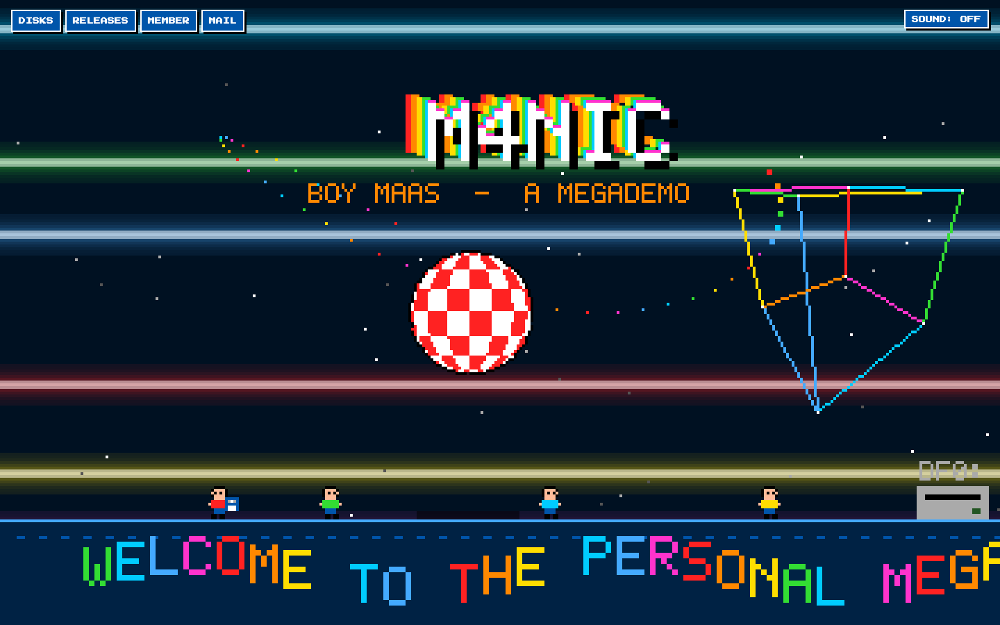
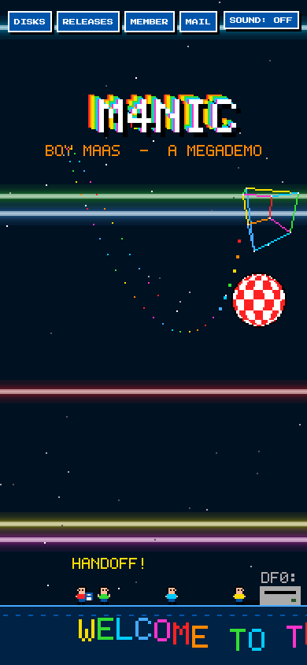
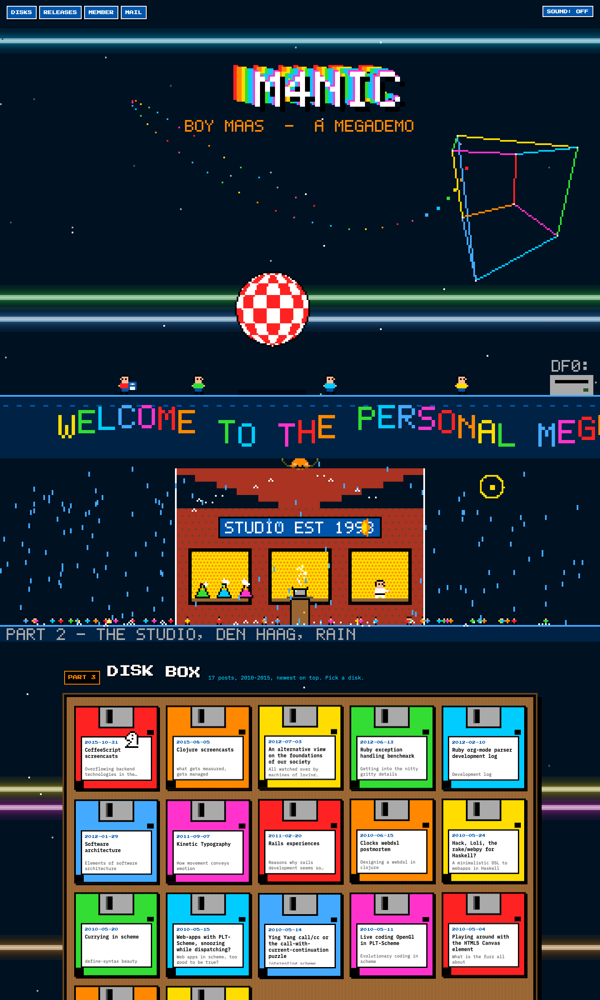
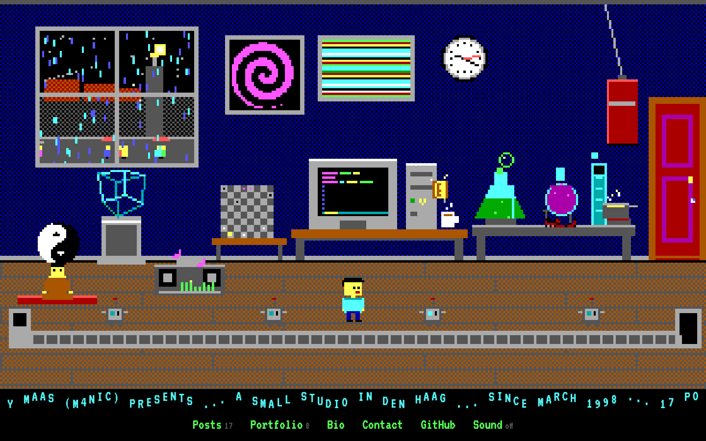
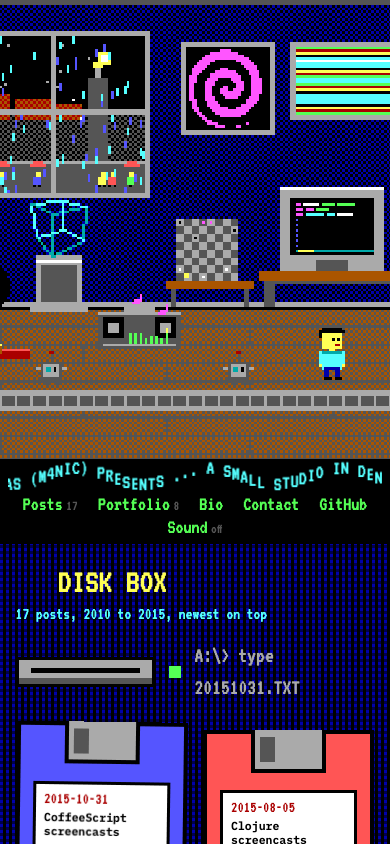
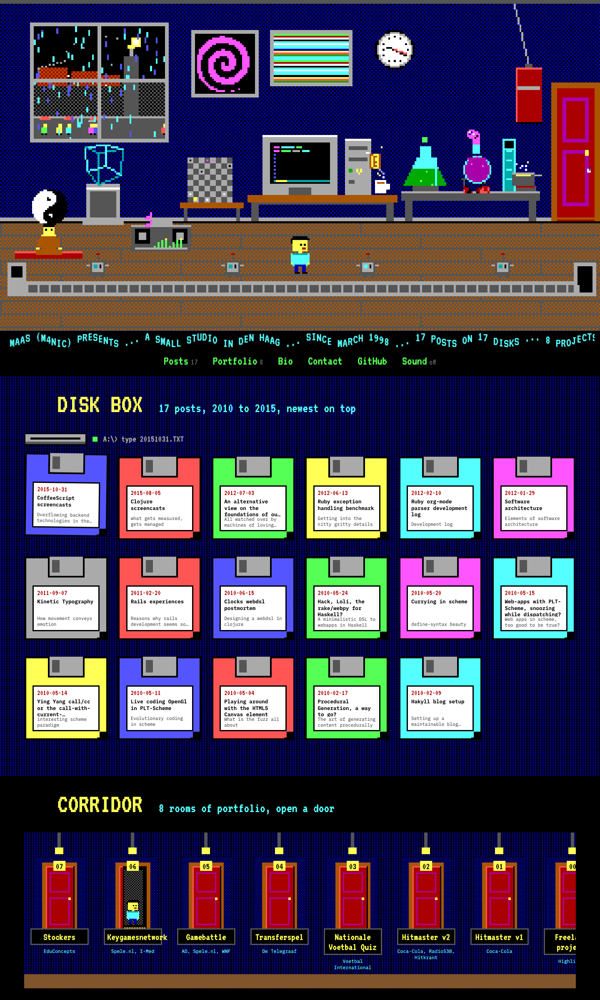
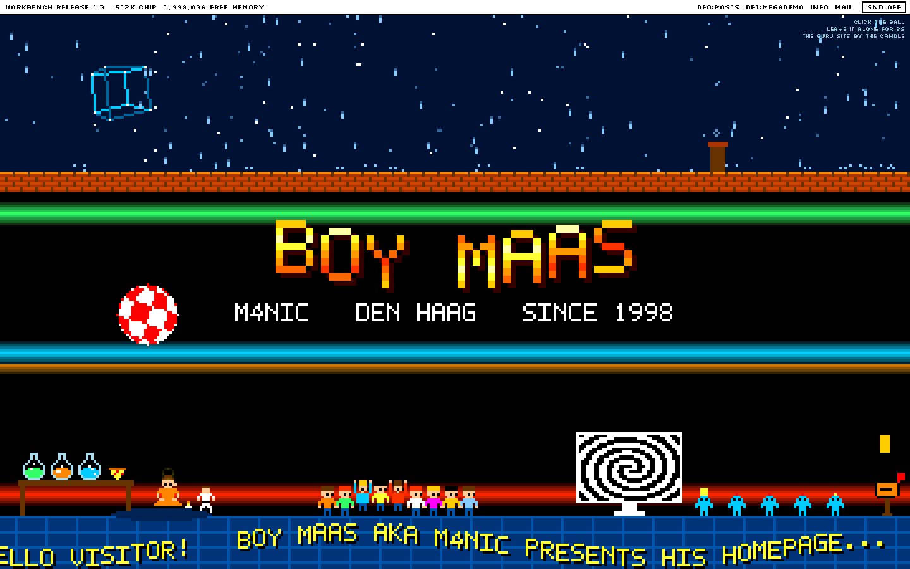
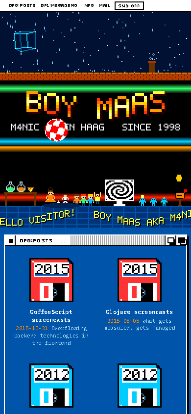
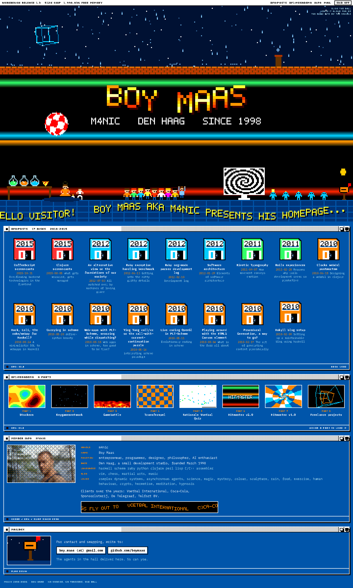

boymaas.nl atelier, round two: alive, bubbly, pixel nostalgia
Click a title to open the live page; each one is already moving on load, reacts to the cursor, and has sound off until you turn it on. Round one (explore/1..3) is kept for the record.
4. 2MB CHIP, an Amiga 1200 megademo
Copper bars per raster line, a kickable Boing ball, trailing bob letters, a rainbow sine scroller, a glenz cube. Four courier bobs relay a floppy into DF0:. Part 2 is the studio in Den Haag at night in rain: flasks bubbling, a pot boiling, kata in the windows, a meditator over the roof, a crowd that gathers under the cursor. Posts are a box of 17 coloured floppies with a chess knight hopping real L-moves across it; portfolio is a cracktro release list; bio is a member card with a dithered portrait over a hypnosis spiral; contact is a Dutch postbox. Secret: click the ball seven times.


full page

5. The studio, a DOS VGA SCUMM room
Mode 13h, sixteen colours, dithered. One room, the studio at night: rain and lightning on the neighbours' roofs, passers-by, a 486 running vim, flasks on fire, a wireframe cube on a pedestal, hypno-spiral and copper-bar posters, a real clock, chess with a hopping knight, a boombox EQ, a swinging punching bag, a levitating meditator before a turning yin-yang, a bouncing crypto coin, four robots handing floppies down a conveyor, and m4nic walking to wherever you click. SCUMM verbs on hover, bubbles pop under the cursor. Posts are a disk box; portfolio is a corridor of eight numbered doors; bio is a C:\BOY> session; contact is a mailbox in the rain. Secret: type hermes.


full page

6. Demo party 1992, Amiga and Workbench 1.3
A cross-section of a demo party in Den Haag on a rainy night: starfield and rain over a tiled roof, a black hall lit by copper bars with a raster-filled title and the Boing ball, a party floor with a sine scroller in the tiles. Three bubbling flasks and a pizza, a meditator by a candle, a kicker in a gi, nine headbangers whose eyes follow the cursor, agents passing packets into a mailbox paid with a spinning coin, a rotating wireframe in the sky. Scroll down and it exits to Workbench 1.3: posts as 17 floppy icons colour-coded by year, portfolio as 8 demo parts each running its own live effect (plasma, fire, rotozoom, tunnel), bio as a cracktro member sheet with a greetings scroller of clients, contact as a mailbox window. Secrets: leave it alone eight seconds; click the meditator three times.


full page
